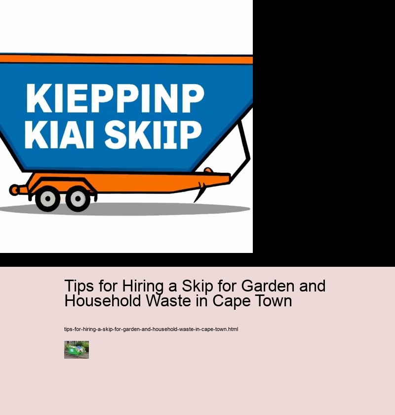

Tips for Hiring a Skip for Garden and Household Waste in Cape Town
Scrap metal recycling
Reasons for hiring a skip
When it comes to disposing of garden and household waste in Cape Town, hiring a skip is one of the most convenient and cost effective ways. There are many reasons for this, such as their ability to save time, create less mess and provide safety.
Firstly, when you hire a skip, you don't have to worry about the hassle and time consuming task of taking your rubbish to landfill sites yourself. This is because the company will take care of that for you. Additionally, they can also provide additional services such as sorting out recyclable materials from non-recyclables which further helps keep your environment clean and healthy.
Furthermore, with a skip hire service there's no need to worry about piles of rubbish collecting on your property which would look unsightly and be dangerous if left unattended. Not only does this give peace of mind but it also prevents any potential hazards or injuries caused by sharp objects or hazardous materials being present in the area.
Moreover, when compared to other waste disposal methods such as skip bags or bins, skips offer greater value for money due to their larger capacity which allows for more efficient clearance of large amounts of garden and household waste in one go. Also, depending on what type of skip you choose (e.g open skips or enclosed skips), you may even be able to get away with not having an extra permit from municipality authorities.
Overall, there are numerous advantages associated with hiring a skip for disposing off garden and household waste in Cape Town; whether it's saving time or eliminating potential safety risks - there's something here for everyone! Plus, with so many companies offering competitive prices nowadays it’s well worth considering investing in some form of skip hire before tackling any major cleanup job at home!
Sizes and types of skips available in Cape Town
When it comes to hiring a skip for your garden and household waste in Cape Town, there are various sizes and types of skips available. The type you choose will depend on the volume of your waste and the access area to where the skip is going to be placed.
For smaller jobs, such as spring cleaning or minor garden work, a mini skip is ideal; usually 2-3m³ in size. These can fit in tight spaces and are great for limited-access areas, like down narrow driveways or alleys. For larger projects, however, such as home renovations or extensive landscaping works, you may require a midi or large skip. Midi skips can handle more than double the amount of waste that a mini skip can manage; roughly 4-6m³ in size. Meanwhile, larger skips with an 8-10m³ capacity will suit even bigger jobs.
Moreover, when considering what type of skip to hire for your project, think about what kinds of materials you’re disposing of too. Many companies offer specialized hazardous waste containers if needed; these are designed to cope with materials such as asbestos or chemicals safely.
Undoubtedly, selecting the right size and type of skip for your needs is essential – but it doesn’t have to be complicated! With so many options available in Cape Town it makes sense to do some research first and find out which one best suits your project needs before committing to any particular provider. Transition phrase: To make things easier...
To make things easier there are plenty of online resources offering advice on choosing a suitable skip for hire in Cape Town – from price comparisons and customer reviews through to local council regulations regarding where skips can be placed etcetera. Take time to familiarize yourself with this information before making any decisions - it could help save money (and stress!) further down the line!
How to choose the right skip size
Choosing the right skip size for your garden and household waste in Cape Town can be a daunting task. However, with some tips, it doesn't have to be so overwhelming. Firstly, consider how much waste you need to dispose of. If you're taking on a large gardening or home renovation project, then you'll likely need a larger skip. Conversely, if it's just small amounts of rubbish from regular maintenance or cleaning tasks, then a smaller skip should suffice.
Moreover, take into account where you'll place the skip. If space is limited and access is restricted by narrow pathways or tight corners, then a mini-skip will probably be more appropriate than its bigger counterparts. On the other hand, if there's plenty of room for manoeuvring and ample space to fit the skip in your driveway or garden area then opt for one that's larger in scope.
Furthermore, think about what type of materials you need to get rid of – hazardous materials such as asbestos require special skips with separate compartments for safe disposal; whereas general waste like furniture or old toys can be disposed off with ease via standard skips. Transition phrase: In conclusion...
In conclusion, when selecting the right skip size for your garden and household waste in Cape Town keep these tips in mind: consider how much rubbish needs disposing of; factor in any space constraints; and assess what kind of materials are being thrown away before making your decision.
Cost of hiring a skip in Cape Town
Hiring a skip in Cape Town can be an effective way to dispose of garden and household waste. However, before you do so, there are some important tips you should keep in mind to ensure that the process goes smoothly. Firstly, it's essential to consider the cost of hiring a skip. Prices vary depending on size and availability, so shop around for the best deal. Additionally, make sure you check whether any permits or licenses are needed for placing the skip on your property.
In addition, think carefully about what type of skip is best suited for your needs - smaller skips are more affordable but may not be able to contain all your waste; whereas larger skips will cost more but provide more room for rubbish disposal. It’s also worthwhile considering whether a drop-off service would be beneficial as these can often save time and money in the long run.
Furthermore, always make sure that you select a reputable company when hiring a skip; read reviews online and ask friends for recommendations. And don't forget to confirm how long it will take them to collect and dispose of your waste - this will help ensure everything runs according to plan. Finally, if available, opt for eco-friendly skips which use renewable energy sources such as solar power or wind turbines during collection and disposal operations.
Overall, by following these simple tips when hiring a skip for garden and household waste in Cape Town, you’ll be able to minimise costs while ensuring that all your rubbish is safely disposed of without harming the environment.
Benefits of hiring a skip from a reliable company
Hiring a skip can be an excellent way to remove garden and household waste in Cape Town. But it's important to choose a reliable company, as this will provide plenty of benefits. Firstly, you'll have peace of mind knowing that your waste is being disposed of responsibly. Rather than taking the risk of disposing it yourself, a reputable company will ensure that any hazardous materials are safely taken care of.
Moreover, you won't have to worry about making multiple trips to the recycling centre or landfill site.
Tips for Hiring a Skip for Garden and Household Waste in Cape Town - Conveyor systems
- Scrap metal recycling
- Bulk waste
- Conveyor systems
Additionally, hiring from a trustworthy company also means that you won't have to put up with noisy late-night collections or untidy skips left outside for days on end. Instead, their punctual staff will arrive at an agreed time and take away any rubbish without causing disruption or mess. Finally, many skip hire firms offer great value for money with competitive prices and discounts available when ordering online in advance - so there really are lots of advantages to using their services!
In conclusion, if you're looking for ways to get rid of garden and household waste in Cape Town then hiring a skip is certainly worth considering - especially if you do it through a dependable company. That way, you can enjoy all the benefits mentioned above while avoiding any potential drawbacks associated with less professional operators!
Safety tips when using the skip
Hiring a skip for garden and household waste in Cape Town can be a great way to get rid of all those piles of junk. However, it's important to stay safe while using the skip. Here are some tips that will help you make sure your skip hire experience is as smooth and stress-free as possible.
First, always follow the safety instructions provided by the skip hire company. Make sure you understand each step before starting work with the skip. Additionally, when loading up the skip, take care not to overfill it or stuff too much rubbish inside – this could cause an accident or injury.
Furthermore, always wear protective gear such as gloves and goggles when handling heavy materials like bricks or concrete slabs in case of breakages that could harm your eyes or hands. Moreover, avoid handling hazardous items like chemicals or asbestos without taking appropriate safety precautions beforehand. And finally, never jump into a filled skip; there may be sharp objects hidden beneath the surface which could injure you badly!
In conclusion, these simple yet effective safety tips should ensure that your waste disposal process goes off without a hitch – so keep them in mind next time you use a skip for all your gardening and household needs!
What can be put into the skip
Hiring a skip for garden and household waste in Cape Town can be a great way to keep your home free of clutter. However, it's important to know what you can and cannot put into the skip. Certain items are prohibited and may lead to fines or legal action if left in the skip.
Firstly, hazardous materials such as batteries, paints, oils and solvents cannot be placed in the skip under any circumstances. This is due to potential fire risks as well as contamination of water sources that could occur from these materials entering the environment illegally. Additionally, any electronic waste such as computers, televisions or fridges should not be included either.
Transitioningly, bulky items like mattresses, furniture and large appliances are also off limits for safety reasons. These large objects can cause damage to the walls of the bin while being loaded resulting in setbacks with collection times and additional costs for repairs. Furthermore, anything containing asbestos must also not be put into skips due to health hazards posed by this material when disturbed or handled without protection equipment.
Tips for Hiring a Skip for Garden and Household Waste in Cape Town - Conveyor systems
- Scrap metal recycling
- Bulk waste
- Conveyor systems
All in all, while hiring a skip is an excellent way to dispose of waste; you must take caution with what is put into it so that you don't incur hefty fines or other penalties which could arise from inappropriate dumping practices.
Recycling options for waste that is not suitable for skips
Hiring a skip for garden and household waste in Cape Town can be a great way to get rid of your clutter. But what about the waste that is not suitable for skips? Fortunately, there are plenty of recycling options available.
Firstly, you can take items like electrical goods or paint tins to dedicated recycling centres. These will usually accept most hazardous materials and ensure they're disposed of safely and responsibly. You could also look into local charitable organisations who may be able to collect large items from your home - definitely worth exploring!
Furthermore, if you have old furniture or bulky items that still have some life left in them, consider donating it.
Tips for Hiring a Skip for Garden and Household Waste in Cape Town - Rubbish removal
- Scrap metal recycling
- Bulk waste
- Conveyor systems
Moreover, many local councils offer collection services for large amounts of recyclable material such as paper, cardboard and plastic bottles.
Tips for Hiring a Skip for Garden and Household Waste in Cape Town - Rubbish removal
- Scrap metal recycling
- Bulk waste
- Conveyor systems
To summarise, when dealing with waste that isn't suitable for skips there are plenty of recycling options available. By taking advantage of these services you can help reduce landfill waste and do your bit for the planet!